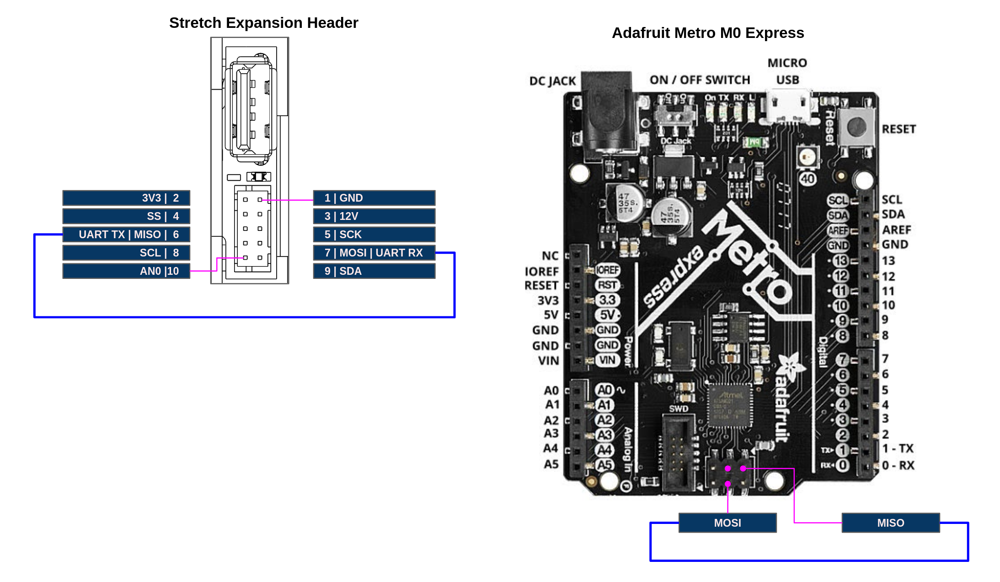

Overview
This tutorial illustrates the integration of a UART device on to the Wrist Expansion header. We recommend first reading Data Transfer tutorial to understand how data is transfered back and forth from Stretch Body to the SAMD uC.
In this tutorial we will extend the Stretch Body Wacc class to send 10 floats down to the custom serial device. The serial device will echo the 10 floats back up to Stretch Body.
For the purposes of the tutorial we will wire the Wacc up in a loopback configuration as a stand-in for an actual physical serial device.
Loopback Hardware Setup
Connect the UART TX pin to the UART RX pin of the Stretch Expansion Header (or the Metro M0 if emulating the Wacc). Connector information for the Expansion Header is found in the Hardware Guide.

Flash Firmware
Pull down the latest version of Stretch Firmware
>>$ cd ~/repos
>>$ git clone https://github.com/hello-robot/stretch_firmware
Next, program the (emulated) Wacc with the provided sketch, hello_wacc_serial. Be sure to:
- Select the board's port from the IDE under Tools/Port
- Select the board 'Hello Wacc' from the IDE under Tools/Board
Firmware Code Walk-through
First, in the sketch setup() we configure enable the SerialExt device
SerialExt.begin(115200);
Next, in Common.h we define Command data to send down from Stretch Body to the serial device. We also define Status data to report back to Stretch Body. For our example we'll send 10 floats down and 10 floats back up.
struct __attribute__ ((packed)) SerialExtCommand{
float data[10];
};
struct __attribute__ ((packed)) SerialExtStatus{
float data[10];
};
In Wacc.cpp we add the code that will communicate with the serial device. Whenever Stretch Body pushes a new command down the Wacc, this function will get called. Here we are writing the Command data to the SerialExt port. We then send back in the Status message the data we read from SerialExt. As it is a physical loopback connection, the data back in Status will be the same as the Command message.
void serial_comms()
{
char * data_down=(char*)&(cmd.serial.data[0]);
char * data_up=(char*)(stat.serial.data);
for(int i=0;i<40;i++)
{
SerialExt.write(data_down+i,1);
}
for(int i=0;i<40;i++)
{
if (SerialExt.available())
{
data_up[i]=SerialExt.read();
}
}
}
Stretch Body Code Walk-through
We provide an example class WaccSerialExt that extends the Wacc class of Stretch Body. This class provides two call backs that will get called on pull_status and push_command respectively. Here we see the packing and unpacking of the 10 floats found in Common.h
def ext_unpack_status(self,s):
"""
s: byte array to unpack
return: number of bytes unpacked
"""
sidx=0
for i in range(self.n_float):
self.status['serial_ext'][i] = unpack_float_t(s[sidx:])
sidx+=4
return sidx
def ext_pack_command(self,s,sidx):
"""
s: byte array to pack in to
sidx: index to start packing at
return: new sidx
"""
for i in range(self.n_float):
pack_float_t(s, sidx, self._command['serial_ext'][i])
sidx += 4
return sidx
We also define a function that generates a new 'command' down to the serial device. In this case it just increments the 10 floats by one:
def serial_data_increment(self):
for i in range(self.n_float):
self._command['serial_ext'][i] =float(self._command['serial_ext'][i]+1)
self._dirty_command=True
Finally, we do a simple test of the class with the tool stretch_wacc_serial_jog.py
from wacc_serial_ext import WaccSerialExt
w=WaccSerialExt()
w.startup()
try:
while True:
print('Hit enter to do TX/RX cycle')
raw_input()
w.serial_data_increment()
w.push_command()
print('TX to SerialExt', w._command['serial_ext'])
w.pull_status()
print('RX from SerialExt', w.status['serial_ext'])
except (KeyboardInterrupt, SystemExit):
w.stop()
Run it from the command line and verify that the 10 floats are being command down to your serial device, through the loopback connection, and back, up to the WaccSerialExt class:
>>$ cd ~/repos/stretch_firmware/tutorial/python
>>$ ./stretch_wacc_serial_jog.py
Hit enter to do TX/RX cycle
..
('TX to SerialExt', [2.0, 3.0, 4.0, 5.0, 6.0, 7.0, 8.0, 9.0, 10.0, 11.0])
('RX from SerialExt', [1.0, 2.0, 3.0, 4.0, 5.0, 6.0, 7.0, 8.0, 9.0, 10.0])
Hit enter to do TX/RX cycle
('TX to SerialExt', [3.0, 4.0, 5.0, 6.0, 7.0, 8.0, 9.0, 10.0, 11.0, 12.0])
('RX from SerialExt', [2.0, 3.0, 4.0, 5.0, 6.0, 7.0, 8.0, 9.0, 10.0, 11.0])
Hit enter to do TX/RX cycle
..
NOTE: It takes one control cycle for the command values to be reported back to the status